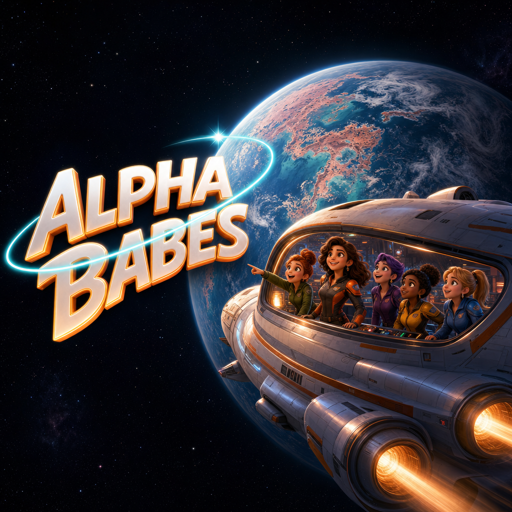
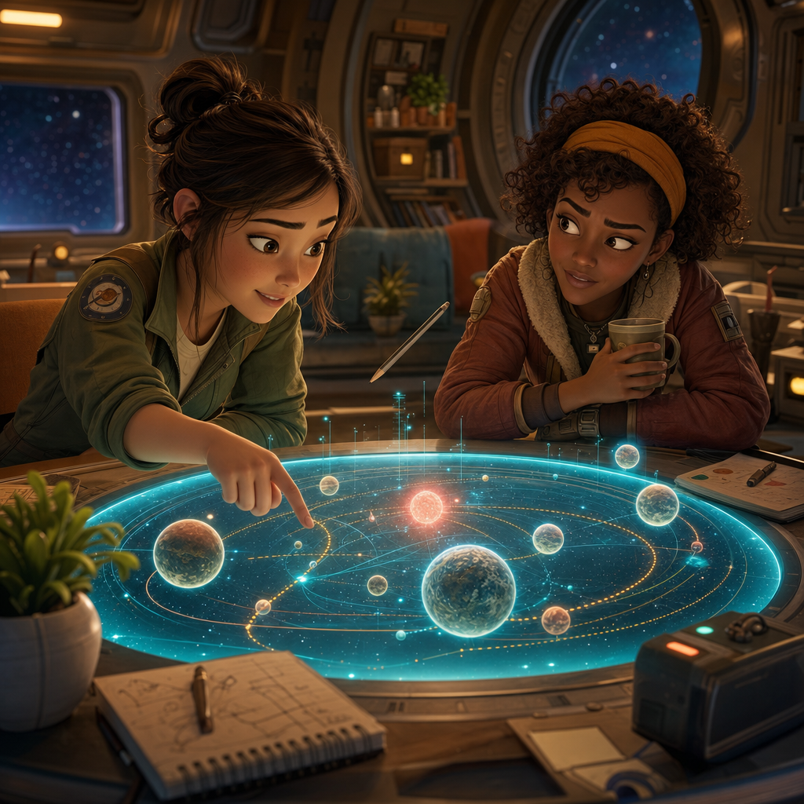
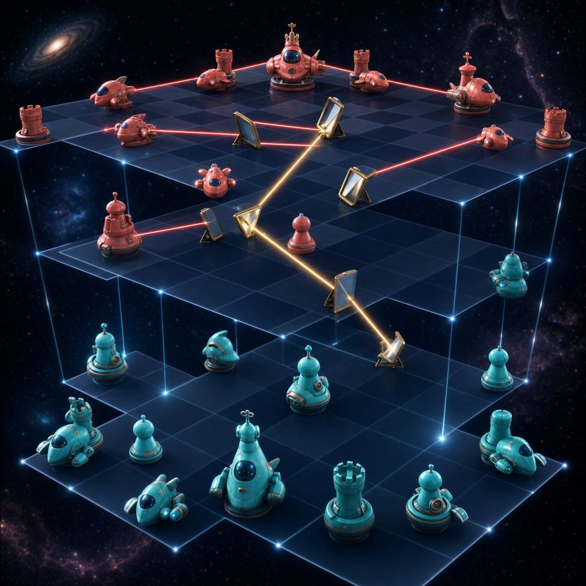
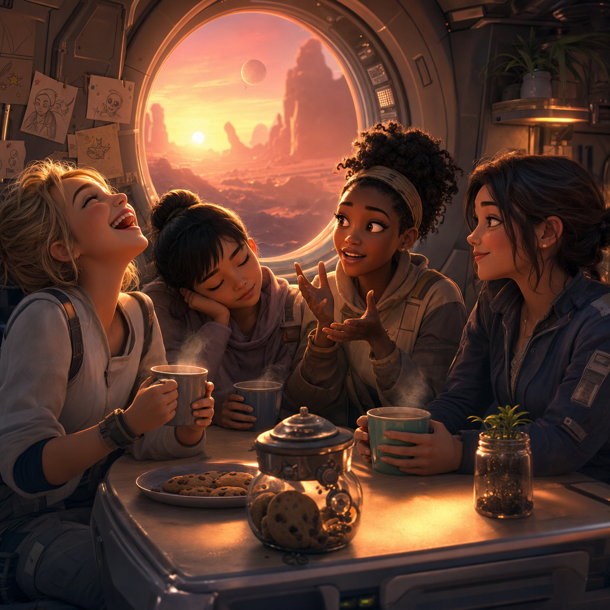

SERIES ONE 🚀
ALPHA BABES
Five seasons. Real exoplanets. One young crew trying not to become space dust.
Young women from different countries fly together between worlds that scientists believe might support life. They speak English in their own national accents — their accents are part of who they are, never a joke. Their destinations are not fantasy planets: they are inspired by real discoveries beyond our Solar System.

Meet Madie. 🎻
Madie leads the Alpha Babes — warm, confident, and Romanian, the heart the crew
orbits around. Her
leitmotif
A leitmotif is a short musical theme that belongs to one
character — whenever their feelings return, their melody returns too. 📖
The map is real. The adventure is ours. 🗺️
Astronomers have discovered thousands of planets around other stars — real
exoplanets
An exoplanet is a planet that orbits a star other than our
Sun. Thousands have been discovered — some might have conditions for life. 📖

You may accidentally learn something. 🧠✨
Every episode hides real science inside the plot. A telescope loses focus — the crew borrows a real mechanical trick from a real astronomy magazine. A planet looks safe until someone understands what its star does to its atmosphere. Woven in: astronomy 🔭 · space physics 🛰️ · light and lenses 🌈 · chemistry 🧪 · biology 🧬 · math and decision-making ➗ · cooperation across cultures 🌍
The science never stops the story. The science IS the story.
Later, the spaceships become chess pieces. ♟️🚀
In later seasons, space combat becomes laser chess in three dimensions. Position matters. Angles matter. A laser travels in a straight line — the strategy around it does not. The audience learns the game by watching the crew play it under pressure.

Every crew member carries a melody. 🎻
Each main character receives a Romantic-era leitmotif. It may whisper on a solo violin when she is alone, darken into low strings when she is afraid, and bloom through the whole orchestra when she finally chooses.
ALPHA BABES — Opening Song 🚀🎶
📜 Lyrics — Frontier Hearts
Verse 1
From the cryo night we awaken in tune
Cloned hearts beating under a silver moon
We're sisters of science, forged to survive
In an ocean of stars, keeping hope alive
Pre-Chorus
No warp speed to carry us, we take it day by day
On a ship made of ice through the cosmic spray
In the chain of command, every soul knows their part
This crew moves as one, many minds with one heart
Chorus
Alpha Babes on the frontier, blazing through the void
Charting new super-Earths with excitement buoyed
This ain't Star Trek — no warp drives, just trust and resolve
This ain't Star Wars — just real grit, no magic involved
Side by side we face the unknown's mighty waves
Together we rise, the fearless Alpha Babes
Verse 2
Genetic perfection doesn't mean we feel no fear
In the darkness of space the danger is real here
But shoulder to shoulder in fire and in storm
We carry each other, in unity we transform
Pre-Chorus 2
Every day is a battle, but our will never bends
With discipline and laughter, we make foes into friends
From the engine's low rumble to the stars' ancient light
We march into destiny ready to fight
Chorus
Alpha Babes on the frontier, pushing past the brink
Navigating hazards on a razor's edge
This ain't Star Trek — our voyage is no holodeck dream
This ain't Star Wars — no chosen ones with laser beams
Born from test tubes into the Milky Way's endless night
Stronger together, we are the Alpha Babes
Bridge
Heartbeats echo in the hull as the cosmos roars
We've got one shot at life on these distant shores
With protocols and bravery we answer the call
If we stumble we get up, united we won't fall
Final Chorus
Alpha Babes on the frontier, hearts burning bright
Carving our story across the starry night
No, this ain't Star Trek — but we dare the final frontier
No, this ain't Star Wars — but the force we need is right here
In our courage, our sisterhood that never caves
Facing the unknown, we are the Alpha Babes
ALPHA BABES — Ending Song 🌙🎶
📜 Lyrics — Echoes of Dawn
Verse 1
We were called by an Oracle into the jaws of night,
To face rogue Medusa, cold empress on a throne.
With fluid resolve and faith, we walk the tightrope fight,
Each heart a torch outshining an empire of stone.
Chorus 1
Like Pascal's Wager, on hope our souls we stake,
Defying cold logic for a warm future's sake.
If hope's an illusion, still better we try,
For in yielding to despair, all dreams surely die.
We'll spend every heartbeat and never lose our way,
Knowing even endless night yields to dawn's first ray.
Verse 2
Armed with Athena's wisdom and a formless art,
We flow like water to crack Medusa's cold heart.
We offer a paradox no algorithm can master,
A sliver of doubt to halt the clockwork disaster.
Bridge
One soul yields their flame so that others may thrive,
That eternal hope may yet survive.
Chorus 2
Now the battle is over as night gives way to sun,
We bask in the quiet peace that our sacrifices won.
We bear the flame onward; its light still our guide,
An echo remains, ever by our side.
Though one star has fallen, its light rides a closed timelike curve,
Where love lives forever—a promise even time must serve.
Mission status 🌟
No pretend percentages — this changes only when something real changes.
- World and science research: 🌱 Growing
- Character art and voices: 🌱 Growing
- Opening and ending music: ✨ Ready to hear
- Episode production: 🛠️ In the workshop
From the shipyard 👀
Artist's impressions — like NASA's paintings of far-away worlds. The real designs live in the workshop.

Help the crew discover something real. 🔭
Found a wonderful discovery, mechanical trick, or correction? Send just that one thing.